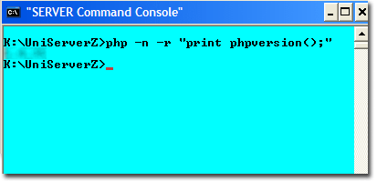

|
|
PHP CLI |
PHP scripts are executed in one of two ways; through a web sever where the output is sent to a browser, or through the command-line interface. Main difference between the two methods is the format of new lines. Output to a browser requires the HTML line break <br />, while the output to a command-window requires \n. This page provides a basic introduction to PHP CLI (command line interface).
Overview
Uniform Server is portable; it does not make changes to your PC. As a consequence, the standard command prompt (console window) cannot be used to run PHP CLI code. The path to php.exe along with other environment variables are undefined. To run PHP CLI code on Uniform Server, use the Server Console.
The Server Console button opens a command window (command prompt) with environment variables preset and paths configured for Uniform Server utilities, including the PHP interpreter. Apart from cosmetics, it is identical to a standard command prompt.
PHP code is run from the command prompt either directly by typing lines of code, or indirectly using code saved in a script file.
Command-window
Running scripts via a command-line is performed using the CLI interpreter php.exe. This program is located in folder C:\UniServerZ\core\phpxx
Note: UniController automatically tracks the installation and changes this path accordingly. In addition, UniController sets several environment variables that are required for portability.
Check functionality:
Type the following into the command-window and press enter: php.exe -n -r "print phpversion();" Displays PHP version number; see image on right for example. |
 |
Note 1: You can clear the command-window by typing CLS
Note 2: For help, type php --help.
Note 3: You can open more than one command-window.
PHP Command-line - run code directly
The above demonstrates running PHP code directly using the CLI interpreter php.exe. Example code repeated below:
php.exe -n -r "print phpversion();"
The interpreter program takes a number of parameters whose function are as follows:
php.exe | CLI interpreter program php.exe - If a file extension is not provided, Windows will assume .exe. Hence, you can use just php. |
-n | Do not use a PHP configuration file. |
-r | Run the following PHP code directly. |
"print phpversion();" | PHP code to run. Note: Windows requires the code to be enclosed within quotes. |
Note: If your code contains quotes, to avoid problems these must be escaped using a backslash; for example:
php -r "print \"test\n\n\";" //-Print test and two new lines \n
Code examples
The following provide examples that you can cut and paste into the command-window:
Examples 1:
php -n -r "echo 'test1';" //-Display literal php -n -r "echo \"test2\";" //-Escape the quotes php -n -r "$a=5; $b=6; print \"$a\n\"; print \"$b\n\"; print \"$a+$b\";" php -n -r "$foo = get_defined_constants(); var_dump($foo);" |
Examples 2:
php -n -r "print phpversion();" //-- Display version php -n -r "phpinfo();" //-- Display information php -n -r "phpinfo();"|more //-- Display a page php -r "print(php_ini_loaded_file ());" //-- Display path to ini |
With one exception, all above examples are forced not to use a configuration file by using the parameter –n.
The last example does not include this parameter and prints the default configuration file loaded. For details, see CLI configuration file section.
PHP Command-line - run code from file (PHP scripts)
Entering code directly is ideal for short scripts. However, for scripts containing several lines of code, it is preferable to save these to a file and run this file from the Server Console.
The following example shows how to run a PHP script with and without a PHP configuration file. If using a configuration file, you have the option to use either the default or your own specific file.
|
Create script:
Create the test script shown on the right and save to root folder UniServerZ with name test1.php |
test1.php
<?php print "Example script\n"; print "Configuration file used:\n"; print(php_ini_loaded_file () . "\n"); print "End example script.\n"; ?> |
|
|
Run script:
Run the script by typing the following into a command-window: php -n test1.php Note: No configuration loaded, because we used -n. |
Result 1
C:\UniServerZ>php test1.php Example script Configuration file used: End example script. C:\UniServerZ> |
|
|
Run script:
Run the script by typing the following into a command-window: php test1.php Note: Default configuration is loaded. |
Result 2
C:\UniServerZ>php test1.php Example script Configuration file used: C:\UniServerZ\core\phpxx\php-cli.ini End example script. C:\UniServerZ> |
|
|
Run script:
Run the script by typing the following into a command-window, replacing phpxx with the php version number selected on your system: php -c core\phpxx\my_cli.ini test1.php Note: Configuration file my_cli.ini is loaded (if it exists; see below). |
Result 3
C:\UniServerZ>php -c core\phpxx\my_cli.ini test1.php Example script Configuration file used: C:\UniServerZ\core\phpxx\my_cli.ini End example script. C:\UniServerZ> |
CLI configuration file
You can choose to run the PHP interpreter with or without a configuration file. When running with a configuration file, you have the option to use the default configuration file or use your own configuration file. These are defined by parameters as follows:
-n | Do not use a PHP configuration file. |
-c | Use the following user configured file. |
If -n and -c not specified, | use default configuration file php-cli.ini |
Default Configuration file:
Default configuration file php-cli.ini has been configured specifically for Uniform Server. You can add to this file; however, make sure you do not make changes to the existing configuration.
Note: The default configuration file used is dependent on the PHP version selected (see Select PHP version) and will be one of the following:
- C:\UniServerZ\core\php7x\php-cli.ini
- C:\UniServerZ\core\php8x\php-cli.ini
User Configuration file:
To avoid issues at a later date, it is probably wise to use your own configuration file; for example, my_cli.ini. This can be a name of your own choice. Create this file by making a copy of php-cli.ini in the same folder and rename it my_cli.ini. Make changes to this file as required.
To force the CLI interpreter php.exe to use a different configuration file, use the parameter –c followed by the full or relative path to the configuration file my_cli.ini. For example:
php -c C:\UniServerZ\core\php7x\my_cli.ini php -c core\php7x\my_cli.ini
A problem with the above paths is that they are not portable or PHP switchable. Moving folder UniServerZ to a different location, the first will fail because of the path change. Switching the PHP version (for example to php8x), both fail because of the folder change and php8x selection. A solution is to use the environment variable PHP_SELECT as follows:
php -c core\%PHP_SELECT%\my_cli.ini
To confirm the file is being picked-up correctly by PHP, type: -r "print(php_ini_loaded_file ());" after parameter –c. For example:
C:\UniServerZ>php -c core\%PHP_SELECT%\my_cli.ini -r "print(php_ini_loaded_file ());" C:\UniServerZ\core\php7x\my_cli.ini C:\UniServerZ>
Summary:
Use one of the following lines to load your configuration file:
php -c core\php7x\my_cli.ini //Fixed PHP php -c core\php8x\my_cli.ini //Fixed PHP php -c core\%PHP_SELECT%\my_cli.ini //Switchable PHP
Note: An alternative, although not PHP switchable, is to locate the configuration file in the root folder UniServerZ. Give the configuration file an appropriate name; for example, my_cli_7x.ini or my_cli_8x.ini. This reduces amount of typing and the files are fully portable. Use the one that matches the PHP selected.
php -c my_cli_7x.ini php -c my_cli_8x.ini
Additional information
This section is included for completeness. Information provided above is for a preconfigured server. However, for experimentation, there is no reason to use a fully blown server. The following describes a minimum PHP installation which may be more suitable:
Minimum requirements
To run PHP CLI scripts, a minimum of two Uniform Server ZeroXIV modules are required. A controller (ZeroXIV_controller_x_x_x.exe) and one of the PHP modules (for example, ZeroXIV_php_x_x_x.exe).
The above combination is fully portable.
Emulate UniController command console
Although the UniController command console is ideal for running PHP scripts, it has one disadvantage: to open the command console requires you to run UniController first. An alternative is to emulate UniController using a batch file; this is covered on page Batch Files- Emulate Server Console.
Passing parameters
You can pass parameters between scripts, such as a batch file and PHP. For details, see page Batch Files- Passing parameters.